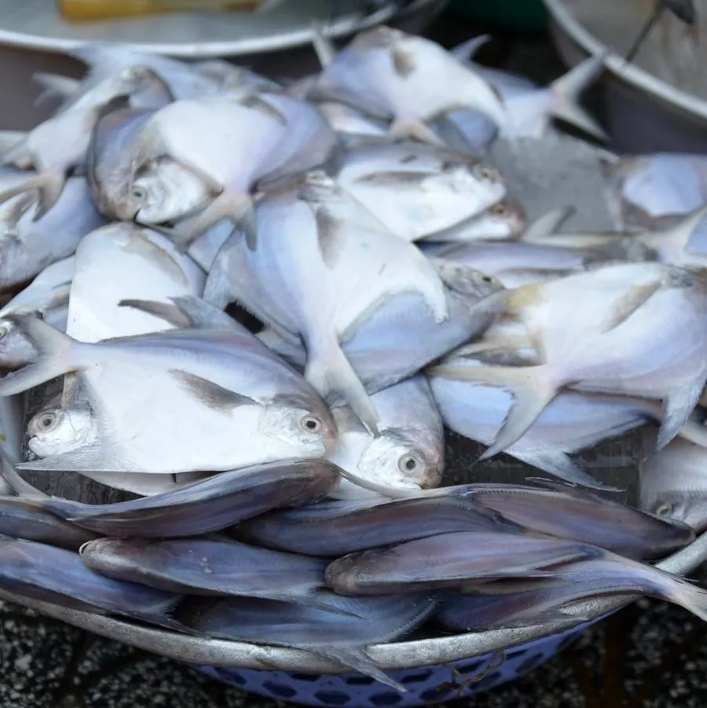

鱼类 · 动物界
银鲳 Pampus argenteus

体形侧扁、通体银白的近海鱼类，肉质细嫩、刺少，是中国沿海传统的名贵海产，常见于东海和南海。
- 分类
- 门脊索动物门纲硬骨鱼纲目鲈形目科鲳科属鲳属
- 栖息环境
- 近岸泥沙底质海域，水深 5–110 m，常成群活动
- 地理分布
- 印度洋—西太平洋近岸，从波斯湾、印度到中国、日本和朝鲜半岛，中国东海和南海常见
- 保护级别
- 暂无评估；中国未列入国家重点保护野生动物名录
物种志
银鲳体呈卵圆形、侧扁而高，头小，口小，吻部钝圆。体色银白，体表光滑，鳞片细小且容易脱落；背鳍和臀鳍形状相似，呈镰刀状，尾鳍深叉。成鱼体长一般 20–35 cm，体重 0.3–1 kg，最大可超过 40 cm、体重 2 kg 以上。
银鲳分布于印度洋—西太平洋的近岸海域，从波斯湾、印度到中国、日本和朝鲜半岛，中国黄海、东海和南海均产。它栖息于水深 5–110 m 的泥沙底质近海，常成群活动。银鲳是杂食偏肉食性鱼类，吃水母、小鱼、虾类、藻类和有机碎屑。繁殖期在春末夏初，亲鱼在近岸产卵。银鲳肉质细嫩、骨刺少，是中国沿海传统的名贵海产，常见的做法有清蒸和红烧；由于长期捕捞，野生资源有所下降，目前市场上部分银鲳来自养殖。它没有IUCN 的正式评估，中国未将其列入国家重点保护野生动物名录。
形态与习性
- 食性杂食偏肉食，吃水母、小鱼、虾类、藻类和有机碎屑
- 体长一般 20–35 cm，最大可超过 40 cm
- 体重常见 0.3–1 kg，最大可超过 2 kg
- 繁殖春末夏初在近岸产卵
- 栖息深度水深 5–110 m 的泥沙底质近海
- 外形体侧扁而高，通体银白，鳞片细小易脱落
趣味知识
- 银鲳通体银白，鳞片细小容易脱落，因此被称为“白鲳”。
- 它游泳时靠宽大的镰刀状鳍缓缓摆动，姿态十分优雅。
- 银鲳肉质细嫩、骨刺少，是中国沿海传统名贵海产之一。